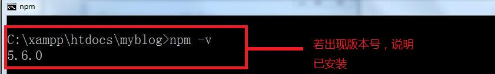
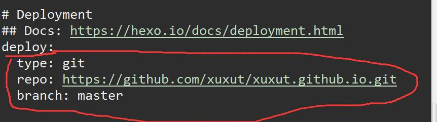

<!doctype html>
<html lang="zh-CN">
<head><meta name="generator" content="Hexo 3.8.0">
    <meta charset="UTF-8">
    <meta http-equiv="X-UA-Compatible" content="IE=11,IE=10,IE=9,IE=8">
    <meta name="baidu-site-verification" content="dIcXMeY8Ya">
    
    <title>基于hexo+github博客的搭建 | 小亭子Blog</title>
    <meta name="viewport" content="width=device-width, initial-scale=1, maximum-scale=1, user-scalable=0">
    <meta name="keywords" content="TT, 前端, Web, 小亭子, 前端开发">
    <meta name="description" content="小亭子个人前端小站">

    
    <link rel="alternative" href="/atom.xml" title="小亭子Blog" type="application/atom+xml">
    
    
    <link rel="shortcut icon" href="/favicon.ico">
    
    <link rel="stylesheet" href="/css/style.css">
    <!--[if lt IE 9]>
    <script src="/js/html5.js"></script>
    <![endif]-->
    
<script>
    var _hmt = _hmt || [];
    (function() {
        var hm = document.createElement("script");
        hm.src = "//hm.baidu.com/hm.js?fd459238242776d173cdc64918fb32f2";
        var s = document.getElementsByTagName("script")[0];
        s.parentNode.insertBefore(hm, s);
    })();
</script>


</head>
</html>
<body class="home">
    <!--[if lt IE 9]>
    <div class="browsehappy">
        当前网页 <strong>不支持</strong>
        你正在使用的浏览器. 为了正常的访问, 请 <a href="http://browsehappy.com/">升级你的浏览器</a>.
    </div>
    <![endif]-->

    <!-- 博客头部 -->
    <header class="header">
    <section class="container header-main">
        <div class="logo">
            <a href="/">
                <div class="cover">
                    <span class="name">小亭子Blog</span>
                    <span class="description">不怕跌倒！</span>
                </div>
            </a>
        </div>
        <div class="dropnav icon-paragraph-justify" id="JELON__btnDropNav"></div>
        <ul class="menu hidden" id="JELON__menu">
            
            <li rel="/2018/02/22/02hexo/index.html" class="item ">
                <a href="/" title="首页" class="icon-home">&nbsp;首页</a>
            </li>
            
            <li rel="/2018/02/22/02hexo/index.html" class="item ">
                <a href="/lab/" title="实验室" class="icon-lab">&nbsp;实验室</a>
            </li>
            
            <li rel="/2018/02/22/02hexo/index.html" class="item ">
                <a href="/about/" title="关于" class="icon-about">&nbsp;关于</a>
            </li>
            
            <li rel="/2018/02/22/02hexo/index.html" class="item ">
                <a href="/comment/" title="留言" class="icon-comment">&nbsp;留言</a>
            </li>
            
        </ul>
        <div class="profile clearfix">
            <div class="feeds fl">
                
                
                <p class="links">
                    
                        <a href="https://github.com/xuxut" target="_blank">Github</a>
                        |
                    
                        <a href="https://pages.coding.me" target="_blank">Coding</a>
                        
                    
                </p>
                <p class="sns">
                    
                        <a href="http://weibo.com/xuxut" class="sinaweibo" target="_blank"><b>■</b> 新浪微博</a>
                    
                        <a href="https://www.facebook.com/profile.php?id=100011855760219&amp;ref=bookmarks" class="qqweibo" target="_blank"><b>■</b> Facebook</a>
                    
                    <a href="javascript: void(0);" class="wechat">
                        <b>■</b>
                        公众号
                        <span class="popover">
                            
                            <i class="arrow"></i>
                        </span>
                    </a>
                </p>
                
            </div>
            <div class="avatar fr">
                
            </div>
        </div>
    </section>
</header>


    <!-- 博客正文 -->
    <div class="container body clearfix">
        <section class="content">
            <div class="content-main widget">
                <!-- 文章页 -->
<!-- 文章 -->
<article class="post article">
    <header class="text-center">
        <h3 class="post-title"><span>基于hexo+github博客的搭建</span></h3>
    </header>
    <p class="post-meta text-center">
        小亭子 发表于
        <time datetime="2018-02-22T05:32:49.000Z">2018-02-22</time>
    </p>
    <div class="post-content">
        <p>介绍一下基于hexo+github博客的搭建（很基础）。</p>
<a id="more"></a>
<h2 id="1-建立空文件夹"><a href="#1-建立空文件夹" class="headerlink" title="1.建立空文件夹"></a>1.建立空文件夹</h2><p>任意地方建立空文件夹（自己找的到）来存放一些必要的子目录文件。<br>比如（我自己的myblog）：<br></p>
<h2 id="2-安装node"><a href="#2-安装node" class="headerlink" title="2.安装node"></a>2.安装node</h2><h3 id="检测node是否已安装"><a href="#检测node是否已安装" class="headerlink" title="检测node是否已安装:"></a>检测node是否已安装:</h3><p>打开myblog，按住shift+鼠标右键，输入以下命令<br><figure class="highlight bash"><table><tr><td class="gutter"><pre><span class="line">1</span><br></pre></td><td class="code"><pre><span class="line">$ node -v</span><br></pre></td></tr></table></figure></p>
<p><br>若没有，请自行安装</p>
<h2 id="3-安装hexo"><a href="#3-安装hexo" class="headerlink" title="3.安装hexo"></a>3.安装hexo</h2><h3 id="安装hexo之前必须确保已安装node。之后执行以下代码"><a href="#安装hexo之前必须确保已安装node。之后执行以下代码" class="headerlink" title="安装hexo之前必须确保已安装node。之后执行以下代码"></a>安装hexo之前必须确保已安装node。之后执行以下代码</h3><p>①安装hexo<br><figure class="highlight bash"><table><tr><td class="gutter"><pre><span class="line">1</span><br></pre></td><td class="code"><pre><span class="line">$ npm install -g hexo</span><br></pre></td></tr></table></figure></p>
<p>正在安装中…<br><br>安装成功！！！<br></p>
<p>②初始化hexo，生成一些文件<br><figure class="highlight bash"><table><tr><td class="gutter"><pre><span class="line">1</span><br></pre></td><td class="code"><pre><span class="line">$ hexo init</span><br></pre></td></tr></table></figure></p>
<p>③安装所需要的组件<br><figure class="highlight bash"><table><tr><td class="gutter"><pre><span class="line">1</span><br></pre></td><td class="code"><pre><span class="line">$ npm install</span><br></pre></td></tr></table></figure></p>
<p>④生成静态页面，并部署到页面<br><figure class="highlight bash"><table><tr><td class="gutter"><pre><span class="line">1</span><br><span class="line">2</span><br></pre></td><td class="code"><pre><span class="line">$ hexo g</span><br><span class="line">$ hexo d</span><br></pre></td></tr></table></figure></p>
<p></p>
<p>⑤打开服务器<br><figure class="highlight bash"><table><tr><td class="gutter"><pre><span class="line">1</span><br></pre></td><td class="code"><pre><span class="line">$ hexo s</span><br></pre></td></tr></table></figure></p>
<p></p>
<p>⑥浏览器地址栏输入localhost:4000，可以看到本地博客。且在本地修改内容也可以。</p>
<h2 id="4-建立GitHub仓库"><a href="#4-建立GitHub仓库" class="headerlink" title="4.建立GitHub仓库"></a>4.建立GitHub仓库</h2><p>首先申请GitHub账号，如何申请自己网上搜索。<br>进入GitHub，<br><br></p>
<h2 id="5-将本地博客连入GitHub仓库"><a href="#5-将本地博客连入GitHub仓库" class="headerlink" title="5.将本地博客连入GitHub仓库"></a>5.将本地博客连入GitHub仓库</h2><p>①安装git<br>在空白区域单击右键，若出现以下内容，说明电脑已安装git。<br>若没有，请自己安装<br></p>
<p>②设置用户名和邮箱<br>在myblog文件夹中点击右键，点击Git Base Here<br>输入自己的用户名和邮箱<br><figure class="highlight bash"><table><tr><td class="gutter"><pre><span class="line">1</span><br></pre></td><td class="code"><pre><span class="line">$ git config --global user.name <span class="string">"xxx"</span></span><br></pre></td></tr></table></figure></p>
<figure class="highlight bash"><table><tr><td class="gutter"><pre><span class="line">1</span><br></pre></td><td class="code"><pre><span class="line">$ git config --global user.email <span class="string">"xxxx@xx.com"</span></span><br></pre></td></tr></table></figure>
<figure class="highlight bash"><table><tr><td class="gutter"><pre><span class="line">1</span><br></pre></td><td class="code"><pre><span class="line">$ git init</span><br></pre></td></tr></table></figure>
<p></p>
<p>③检查是否有.ssh的文件夹<br><figure class="highlight bash"><table><tr><td class="gutter"><pre><span class="line">1</span><br></pre></td><td class="code"><pre><span class="line">$ <span class="built_in">cd</span> ~/.ssh</span><br></pre></td></tr></table></figure></p>
<p>若以前没有.ssh文件夹，则显示：<br></p>
<p>④生成密匙<br><figure class="highlight bash"><table><tr><td class="gutter"><pre><span class="line">1</span><br></pre></td><td class="code"><pre><span class="line">$ ssh-keygen -t rsa -C <span class="string">"xxxx@xx.com"</span></span><br></pre></td></tr></table></figure></p>
<p>此处填写自己的邮箱<br>连续三个回车<br>可以看到创建了一个.ssh的文件夹（包含id_rsa和id_rsa.pub两个文件），并生成密匙。<br>（两个文件存储路径默认在图中所示，不同电脑有所不同）<br></p>
<p>④再次检查.ssh文件夹<br><figure class="highlight bash"><table><tr><td class="gutter"><pre><span class="line">1</span><br></pre></td><td class="code"><pre><span class="line">$ <span class="built_in">cd</span> ~/.ssh</span><br></pre></td></tr></table></figure></p>
<p></p>
<p>⑤进入ssh文件夹，输入ls，出现id_rsa id_rsa.pub，说明生成密匙成功。<br><figure class="highlight bash"><table><tr><td class="gutter"><pre><span class="line">1</span><br></pre></td><td class="code"><pre><span class="line">$ ls</span><br></pre></td></tr></table></figure></p>
<p></p>
<p>⑥输入eval “$(ssh-agent -s)”，添加密钥到ssh-agent<br><figure class="highlight bash"><table><tr><td class="gutter"><pre><span class="line">1</span><br></pre></td><td class="code"><pre><span class="line">$ <span class="built_in">eval</span> <span class="string">"<span class="variable">$(ssh-agent -s)</span>"</span></span><br></pre></td></tr></table></figure></p>
<p></p>
<p>⑦再输入ssh-add ~/.ssh/id_rsa，添加生成的SSH key到ssh-agent<br><figure class="highlight bash"><table><tr><td class="gutter"><pre><span class="line">1</span><br></pre></td><td class="code"><pre><span class="line">$ ssh-add ~/.ssh/id_rsa</span><br></pre></td></tr></table></figure></p>
<p></p>
<p>⑧登录GitHub，打开首页的右下角仓库。<br><br><br></p>
<p>⑨测试添加ssh是否成功。<br>出现(yes/no)，输入yes。<br>若看到 Hi 后面是你的用户名，说明成功了。<br><figure class="highlight bash"><table><tr><td class="gutter"><pre><span class="line">1</span><br></pre></td><td class="code"><pre><span class="line">$ ssh -T git@github.com</span><br></pre></td></tr></table></figure></p>
<p></p>
<h2 id="6-配置Deployment，在myblog（最开始建立的文件夹）中，找到-config-yml文件，在末尾进行修改。"><a href="#6-配置Deployment，在myblog（最开始建立的文件夹）中，找到-config-yml文件，在末尾进行修改。" class="headerlink" title="6.配置Deployment，在myblog（最开始建立的文件夹）中，找到_config.yml文件，在末尾进行修改。"></a>6.配置Deployment，在myblog（最开始建立的文件夹）中，找到_config.yml文件，在末尾进行修改。</h2><p><br>repo值是在仓库里的右下角<br></p>
<h2 id="7-安装扩展"><a href="#7-安装扩展" class="headerlink" title="7.安装扩展"></a>7.安装扩展</h2><p>①打开myblog文件夹，单击右键+shift。点击“在此处执行命令窗口”</p>
<p>②安装扩展（hexo部署）<br><figure class="highlight bash"><table><tr><td class="gutter"><pre><span class="line">1</span><br></pre></td><td class="code"><pre><span class="line">$ npm install hexo-deployer-git --save</span><br></pre></td></tr></table></figure></p>
<p>③生成静态页面，发布到GitHub<br><figure class="highlight bash"><table><tr><td class="gutter"><pre><span class="line">1</span><br><span class="line">2</span><br></pre></td><td class="code"><pre><span class="line">$ hexo g </span><br><span class="line">$ hexo d</span><br></pre></td></tr></table></figure></p>
<p>④连接成功后会出现一个弹出框。<br>输入自己的用户名/邮箱，密码即可<br><br>成功了就访问地址 http://用户名.github.io，可以看见页面了</p>
<p>若此处出错，则修改地址，运行以下代码：（在git bash中执行）<br><br><figure class="highlight bash"><table><tr><td class="gutter"><pre><span class="line">1</span><br></pre></td><td class="code"><pre><span class="line">$ git remote add origin git@github.com:用户名/用户名.github.io.git</span><br></pre></td></tr></table></figure></p>
<p>打开myblog下的_config.yml，修改repo<br></p>
<figure class="highlight bash"><table><tr><td class="gutter"><pre><span class="line">1</span><br><span class="line">2</span><br></pre></td><td class="code"><pre><span class="line">$ hexo g</span><br><span class="line">$ hexo d</span><br></pre></td></tr></table></figure>
<p><br>访问地址 http://用户名.github.io</p>

    </div>
    <p class="post-meta">
        <span class="post-cat">分类：
            <a class="cat-link" href="/categories/博客开发/">博客开发</a>
        </span>
        <span class="post-tags">
            标签：
            
    
        <a href="/tags/hexo/" title="hexo">hexo</a>
    

        </span>
    </p>
</article>
<!-- 分享按钮 -->

  <div class="article-share clearfix text-center">
    <div class="share-area">
      <span class="share-txt">分享到：</span>
      <a href="javascript: window.open('http://service.weibo.com/share/share.php?url=' + encodeURIComponent(location.href) + '&title=' + document.title + '&language=zh_cn');" class="share-icon weibo"></a>
      <a href="javascript: alert('请复制链接到微信并发送');" class="share-icon wechat"></a>
      <a href="javascript: window.open('http://sns.qzone.qq.com/cgi-bin/qzshare/cgi_qzshare_onekey?url=' + encodeURIComponent(location.href) + '&title=' + document.title);" class="share-icon qqzone"></a>
      <a href="javascript: window.open('http://connect.qq.com/widget/shareqq/index.html?url=' + encodeURIComponent(location.href) + '&desc=Jelon个人博客&title=' + document.title + '&callback=' + encodeURIComponent(location.href));" class="share-icon qq"></a>
      <a href="javascript: window.open('http://shuo.douban.com/!service/share?href=' + encodeURIComponent(location.href) + '&name=' + document.title + '&text=' + document.title);" class="share-icon douban"></a>
    </div>
  </div>


<!-- 上一篇/下一篇 -->

<div class="article-nav clearfix">
    
    <span class="prev fl">
        上一篇<br>
        <a href="/2018/02/23/03介绍主题的修改/">
            
                介绍主题的修改
            
        </a>
    </span>
    

    
    <span class="next fr">
        下一篇<br>
        <a href="/2018/02/11/git和vscode安装文档/">
            
                git和vscode安装文档
            
        </a>
    </span>
    
</div>

<!-- 文章评论 -->

  <script src="/js/comment.js"></script>
  <div id="comments" class="comment">
    <!--
    <div class="sign-bar">
      GitHub 已登录!
      <span class="sign-link">登出</span>
    </div>
    <section class="box">
      <div class="com-avatar"></div>
      <div class="com-text">
        <div class="main">
          <textarea class="text-area-edited show" placeholder="欢迎评论！"></textarea>
          <div class="text-area-preview"></div>
        </div>
        <div class="switch">
          <div class="switch-item on">编辑</div>
          <div class="switch-item">预览</div>
        </div>
        <div class="button">提交</div>
      </div>
    </section>
    <section class="tips">注：评论支持 markdown 语法！</section>
    <section class="list-wrap">
      <ul class="list">
        <li>
          <div class="user-avatar">
            <a href="/">
              
            </a>
          </div>
          <div class="user-comment">
            <div class="user-comment-header">
              <span class="post-name">张德龙</span>
              <span class="post-time">2017年12月12日</span>
              <span class="like liked">已赞</span>
              <span class="like-num">2</span>
            </div>
            <div class="user-comment-body">333333</div>
          </div>
        </li>
        <li>
          <div class="user-avatar">
            <a href="/">
              
            </a>
          </div>
          <div class="user-comment">
            <div class="user-comment-header">
              <span class="post-name">刘德华</span>
              <span class="post-time">2017年12月12日</span>
              <span class="like">点赞</span>
              <span class="like-num">2</span>
            </div>
            <div class="user-comment-body">vvvvv</div>
          </div>
        </li>
      </ul>
      <div class="page-nav">
        <a href="javascript: void(0);" class="item">1</a>
        <a href="javascript: void(0);" class="item">2</a>
        <a href="javascript: void(0);" class="item current">3</a>
      </div>
    </section>
    -->
  </div>
  <script>
  JELON.Comment({
    container: 'comments',
    label: '02hexo' || '2018/02/22/02hexo/',
    owner: 'xuxut',
    repo: 'blog_comments',
    clientId: '631adc330b6c1dea6507',
    clientSecret: '957d552e22d621653e22f155a00b0363058317fc'
  });
  </script>


            </div>

        </section>
        <!-- 侧栏部分 -->
<aside class="sidebar">
    <!-- 搜索框 -->
    <div id="site_search">
        <input type="text" id="local-search-input" name="q" results="0" placeholder="搜索..." class="form-control search">
        <!-- 清空/重置搜索框 -->
        <i class="search-clear"></i>
        <!-- 搜索结果区 -->
        <div id="local-search-result"></div>
        <!-- 无匹配时显示，注意请在 CSS 中设置默认隐藏 -->
        <p class="no-result">无搜索结果 </p> 
    </div>
    <script src="/js/jquery.js"></script>
    <script src="/js/search.js"></script>
    <script type="text/javascript">
        var search_path = "search.xml";
        if (search_path.length == 0) {
            search_path = "search.xml";
        }
        var path = "/" + search_path;
       
        searchFunc(path, 'local-search-input', 'local-search-result');
    
         // 清空搜索
         $('.search-clear').click(function(){
            // $('#local-search-input').val('')
            searchFunc(path, 'local-search-input', 'local-search-result');
            // $('#local-search-result').hide()
            // $('.no-result').show()
        })
    </script>

    <!-- 文章分类 -->
    <section class="widget">
        <h3 class="widget-hd"><strong>文章分类</strong></h3>
        <!-- 文章分类 -->
<ul class="widget-bd">
    
    <li>
        <a href="/categories/博客开发/">博客开发</a>
        <span class="badge">(7)</span>
    </li>
    
    <li>
        <a href="/categories/后端/">后端</a>
        <span class="badge">(2)</span>
    </li>
    
    <li>
        <a href="/categories/前端/">前端</a>
        <span class="badge">(5)</span>
    </li>
    
    <li>
        <a href="/categories/前端框架/">前端框架</a>
        <span class="badge">(2)</span>
    </li>
    
    <li>
        <a href="/categories/工具/">工具</a>
        <span class="badge">(1)</span>
    </li>
    
    <li>
        <a href="/categories/react/">react</a>
        <span class="badge">(3)</span>
    </li>
    
    <li>
        <a href="/categories/打包工具/">打包工具</a>
        <span class="badge">(1)</span>
    </li>
    
    <li>
        <a href="/categories/前端编译器/">前端编译器</a>
        <span class="badge">(1)</span>
    </li>
    
    <li>
        <a href="/categories/es6/">es6</a>
        <span class="badge">(1)</span>
    </li>
    
    <li>
        <a href="/categories/ui框架/">ui框架</a>
        <span class="badge">(1)</span>
    </li>
    
    <li>
        <a href="/categories/微信小程序/">微信小程序</a>
        <span class="badge">(1)</span>
    </li>
    
    <li>
        <a href="/categories/微信网页版/">微信网页版</a>
        <span class="badge">(1)</span>
    </li>
    
</ul>
    </section>

    
    <section class="widget">
        <h3 class="widget-hd"><strong>热门标签</strong></h3>
        <!-- 文章标签 -->
<div class="widget-bd tag-wrap">
  
    <a class="tag-item" href="/tags/hexo/" title="hexo">hexo (7)</a>
  
    <a class="tag-item" href="/tags/php/" title="php">php (1)</a>
  
    <a class="tag-item" href="/tags/html/" title="html">html (1)</a>
  
    <a class="tag-item" href="/tags/javascipt/" title="javascipt">javascipt (1)</a>
  
    <a class="tag-item" href="/tags/jquery/" title="jquery">jquery (1)</a>
  
    <a class="tag-item" href="/tags/javascript/" title="javascript">javascript (3)</a>
  
    <a class="tag-item" href="/tags/vue/" title="vue">vue (1)</a>
  
    <a class="tag-item" href="/tags/react/" title="react">react (3)</a>
  
    <a class="tag-item" href="/tags/git/" title="git">git (2)</a>
  
    <a class="tag-item" href="/tags/vscode/" title="vscode">vscode (1)</a>
  
    <a class="tag-item" href="/tags/node/" title="node">node (1)</a>
  
    <a class="tag-item" href="/tags/高阶组件HOC/" title="高阶组件HOC">高阶组件HOC (1)</a>
  
    <a class="tag-item" href="/tags/webpack/" title="webpack">webpack (1)</a>
  
    <a class="tag-item" href="/tags/fetch/" title="fetch">fetch (1)</a>
  
    <a class="tag-item" href="/tags/下载/" title="下载">下载 (1)</a>
  
    <a class="tag-item" href="/tags/css/" title="css">css (1)</a>
  
    <a class="tag-item" href="/tags/less/" title="less">less (1)</a>
  
    <a class="tag-item" href="/tags/bootstrap/" title="bootstrap">bootstrap (1)</a>
  
    <a class="tag-item" href="/tags/redux/" title="redux">redux (1)</a>
  
    <a class="tag-item" href="/tags/redux-thunk/" title="redux-thunk">redux-thunk (1)</a>
  
    <a class="tag-item" href="/tags/网址/" title="网址">网址 (1)</a>
  
    <a class="tag-item" href="/tags/mpvue/" title="mpvue">mpvue (1)</a>
  
    <a class="tag-item" href="/tags/weui/" title="weui">weui (1)</a>
  
    <a class="tag-item" href="/tags/js/" title="js">js (2)</a>
  
    <a class="tag-item" href="/tags/antd-mobile/" title="antd-mobile">antd-mobile (1)</a>
  
    <a class="tag-item" href="/tags/微信JS-SDK/" title="微信JS-SDK">微信JS-SDK (1)</a>
  
</div>
    </section>
    

    

    
    <!-- 友情链接 -->
    <section class="widget">
        <h3 class="widget-hd"><strong>友情链接</strong></h3>
        <!-- 文章分类 -->
<ul class="widget-bd">
    
        <li>
            <a href="https://xuxut.github.io" target="_blank" title="小亭子个人前端小站">前端博客小站</a>
        </li>
    
        <li>
            <a href="https://www.baidu.com" target="_blank" title="百度搜索">百度</a>
        </li>
    
</ul>
    </section>
    
</aside>
<!-- / 侧栏部分 -->
    </div>

    <!-- 博客底部 -->
    <footer class="footer">
    &copy;
    
        2016-2019
    

    <a href="/">小亭子 Loves You</a>
</footer>
<div class="back-to-top" id="JELON__backToTop" title="返回顶部">返回顶部</div>

    <!--博客js脚本 -->
    <!-- 这里放网站js脚本 -->
<script src="/js/main.js"></script>
</body>
</html>